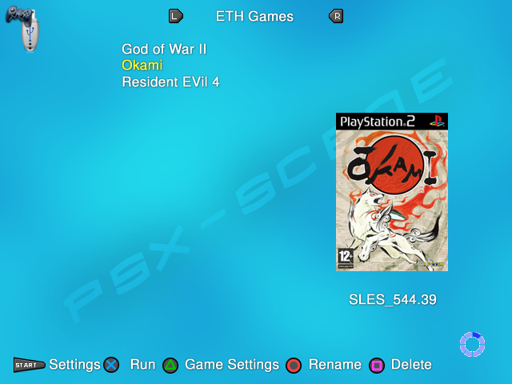

ETH mode¶
Open PS2 Loader 0.9.3 supports loading games from ethernet. It uses the SMB (Server Message Block) protocol to connect the PS2 to a PC’s shared folder. You can connect your console to a router with an ethernet cable if you already have a network setup or connect directly to your PC with a crossover cable.
The game formats are the same as on USB devices. No special formatting is required, any of the PC’s normal file systems can be used. There is a disadvantage of using the FAT32 file system, as it has a 4GB limitation and you will need to use a USB Installing program for games over 4GBs. If you are using the FAT32 file system, read the USB games page for more informations.
To be able to use SMB, you will need to create a folder – usually named “PS2SMB” -, to share it over your network and also to give permission to your PC account(s). For more informations about how to share a folder and give permissions to account according to your OS, see this page.
You will use PS2SMB folder to store your PS2 games in a very similar way to the USB mode : iso under 700MB have to be dropped into the CD folder, iso over 700MB into the DVD folder. For PS2 games over 4GB, there are 2 possibilities : either you use FAT32 as file system, and you will have to slice them into parts – just like in USB mode, or you use NTFS, and you can drop them as ico in the DVD folder. The other folders – ART, VMC, CHT, CFG… – will be created when you connect your PS2 to your network for the first time.
OPL ETH mode :¶
You need to enable the ETH device before you can use it. In OPL menu, go to Settings and set ETH device start mode to MANUAL or AUTO. You should now be able to access the ETH Games page. If you have enabled the device and if your PS2 games aren’t displayed in the ETH games page, there are a few possible things to check :
no connection / bad connection / wrong or bad ethernet cable ;
incorrect network configurations, port or firewall blocking ;
fileSharing is not enabled on PC, incorrect sharenames (not matching) or permissions not set ;
incorrect username / password or username is not set – while required ;
incorrect NetBIOS name / not entered in caps ;
DHCP not enabled in router settings, PS2 IP adresses not reserved correctly ;
DHCP used while PS2 directly connect to PC ;
(…)
Note : OPL has now error codes that help you to troubleshoot your network setup.
Error code > what to do :
%d: Cannot connect to SMB server > check your network settings.
%d: Cannot log into SMB server > wrong password.
%d: Cannot open SMB share > check PS2SMB folder permissions.
%d: DHCP server unavailable > DHCP used with a static IP, check your router settings. If no router used, change PS2 IP adress type from DHCP to STATIC.